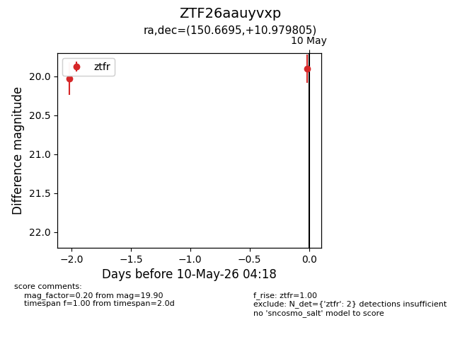
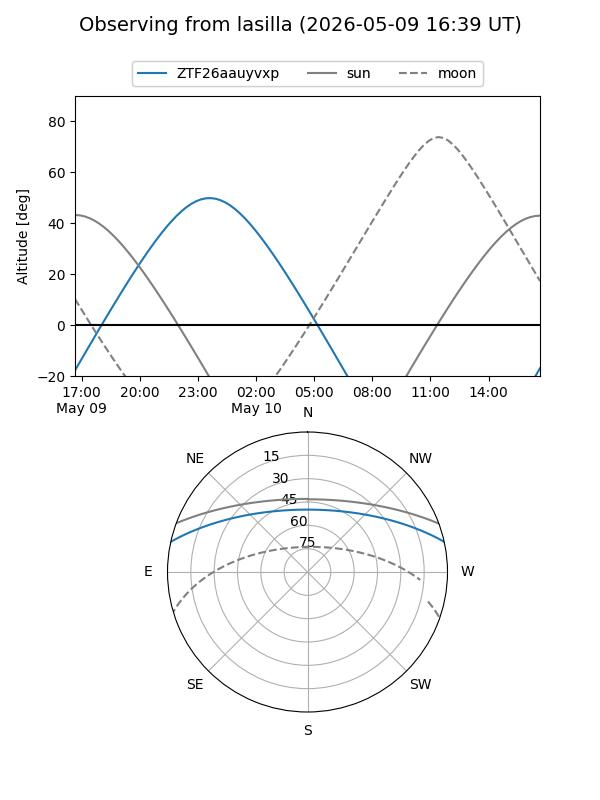
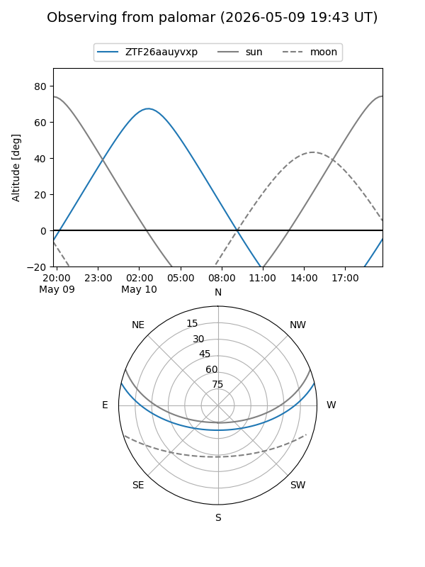

ZTF26aauyvxp
Target ZTF26aauyvxp at 2026-05-10 04:19
Aliases and brokers:
FINK: link
Lasair: link
ALeRCE: link
alt names
ZTF26aauyvxp (ztf,fink_ztf)
Coordinates:
equatorial (ra, dec) = 150.6695,+10.97980
equatorial (HMS+DMS) = 10:02:40.69,+10:58:47.30
galactic (l, b) = (226.7496,+47.23876)
Flags:
Photometry:
last ztfr=19.90
2 ztfr detections
Lightcurve

Visibility


Additional plots